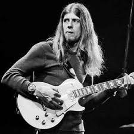
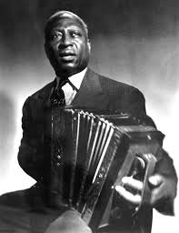
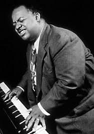

American blues and gospel singer, songwriter, and musician. He was one of the most popular blues singers of the 1920s and has been called the "Father of the Texas Blues".
Jefferson's performances were distinctive because of his high-pitched voice and the originality of his guitar playing. His recordings sold well, but he was not a strong influence on younger blues singers of his generation, who could not imitate him as easily as they could other commercially successful artists. Later blues and rock and roll musicians, however, did attempt to imitate both his songs and his musical style.

English blues singer, guitarist, organist and songwriter, whose musical career spans over fifty years. In the 1960s, he was the founder of John Mayall & the Bluesbreakers, a band which has counted among its members some of the most famous blues and blues rock musicians.

American folk and blues musician notable for his strong vocals, virtuosity on the twelve-string guitar, and the folk standards he introduced. He is best known as Lead Belly. Though many releases credit him as "Leadbelly", he himself wrote it as "Lead Belly", which is also the spelling on his tombstone[1][2] and the spelling used by the Lead Belly Foundation.[3]
Lead Belly usually played a twelve-string guitar, but he also played the piano, mandolin, harmonica, violin, and "windjammer" (diatonic accordion).[4] In some of his recordings he sang while clapping his hands or stomping his foot.
Lead Belly's songs covered a wide range, including gospel music; blues about women, liquor, prison life, and racism; and folk songs about cowboys, prison, work, sailors, cattle herding, and dancing. He also wrote songs about people in the news, such as Franklin D. Roosevelt, Adolf Hitler, Jean Harlow, Jack Johnson, the Scottsboro Boys and Howard Hughes.
Lead Belly was inducted into the Rock and Roll Hall of Fame in 1988 and the Louisiana Music Hall of Fame in 2008.

American pianist and composer, noted for his playing in the boogie-woogie style. His best-known work, "Honky Tonk Train Blues", has been recorded by many artists.
Lewis was born in Chicago, though some sources state Louisville, Kentucky, on September 4, 1905 (September 3 and 13 have also been cited as his date of birth in various sources). In his youth he was influenced by the pianist Jimmy Yancey. His father, a guitarist who made two recordings of his own, introduced Meade to music and arranged for him to have violin lessons. He gave up the violin at age 16, shortly after his father's death, and switched to the piano. The nickname "Lux" was given to him by his boyhood friends. He would imitate a couple of characters from a popular comic strip in Chicago, Alphonse and Gaston, and stroke an imaginary beard as part of the routine. His friends started calling him the Duke of Luxembourg because of this, and the name stuck for the rest of his life. He became friends with Albert Ammons during childhood, a friendship that would last throughout their lives. They went to the same school together briefly, and they practiced and learned the piano together on the Ammons family piano.
A 1927 rendition of "Honky Tonk Train Blues", released by Paramount Records, marked his recording debut.He remade it for Parlophone in 1935 and for Victor in 1937, and a recording exists of a radio show, Camel Caravan, broadcast from New York City in 1939, which includes "Honky Tonk Train Blues". His performance at John Hammond's historic From Spirituals to Swing concert at Carnegie Hall in 1938 brought Lewis to public attention. Following the event, Lewis and two other performers from that concert, Albert Ammons and Pete Johnson, often appeared as a trio and became the leading boogie-woogie pianists of the day.
They had an extended engagement at Café Society, toured as a trio, and inspired the formation of Blue Note Records in 1939. Their success led to a decade-long boogie-woogie craze,with big-band swing treatments by Tommy Dorsey, Will Bradley, and others; and numerous country boogie and early rock-and-roll songs.
Lewis appeared in the movies New Orleans (1947) and Nightmare (1956). He also appeared, uncredited, in the movie It's a Wonderful Life, playing piano in the scene where George Bailey gets thrown out of Nick's Bar.
Lewis was fond of the Minneapolis area, where a niece lived, and would visit as often as he could. He appeared annually at the White House Restaurant (no longer extant) in Golden Valley. He began a successful three-week engagement there in May 1964. Around 2 a.m. on Sunday, June 7, Lewis left the parking lot of the White House and headed east on Olson Memorial Highway, when his Chrysler Imperial was rear-ended by a vehicle driven by one Ronald Bates, who was traveling an estimated 80 mph. Lewis's car was pushed 400 feet and crashed into a tree; he was killed instantly. He was 58. Bates survived, but his passenger died the following day
Sources:https://en.wikipedia.org/wiki/Blind_Lemon_Jeffersonhttps://en.wikipedia.org/wiki/John_Mayallhttps://en.wikipedia.org/wiki/Lead_Bellyhttps://en.wikipedia.org/wiki/Meade_Lux_Lewis